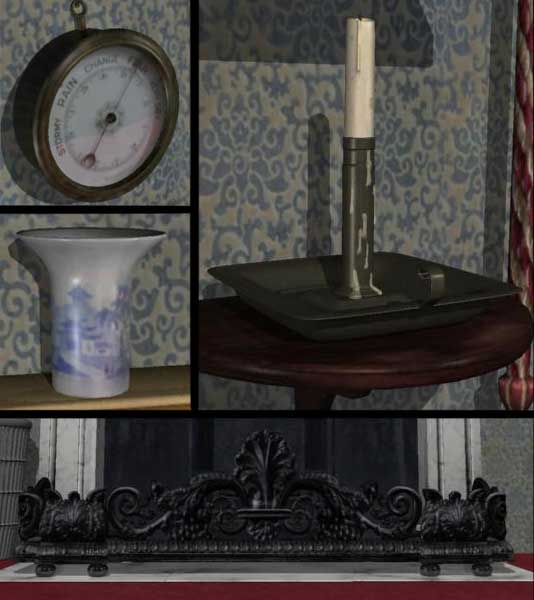

{Darwin's Study: 3D Modeling, Texturing, Lighting;}
The best summer of college was spent in The Netherlands recreating Charles Darwin's study in Down House for a celebratory documentary Natural Selection: Darwin's Mystery of Mysteries.

I used Maya, Photoshop and about 1000 photos from the actual Down House to recreate the space, primarily the mantel and surroundings.
